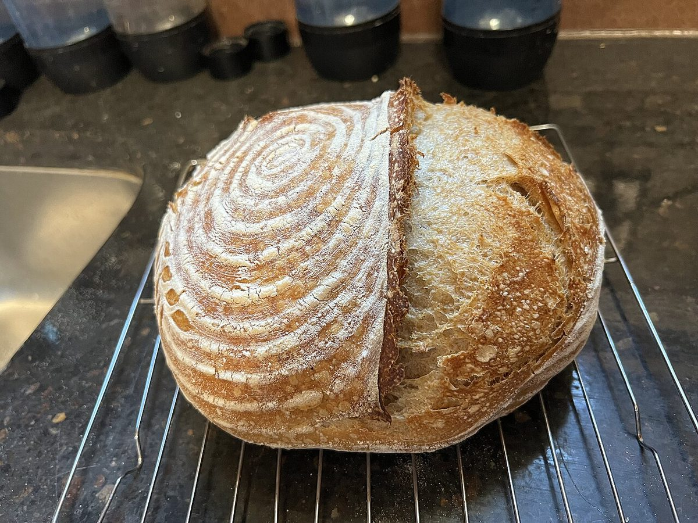
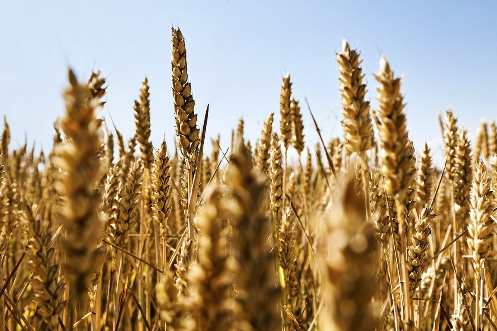
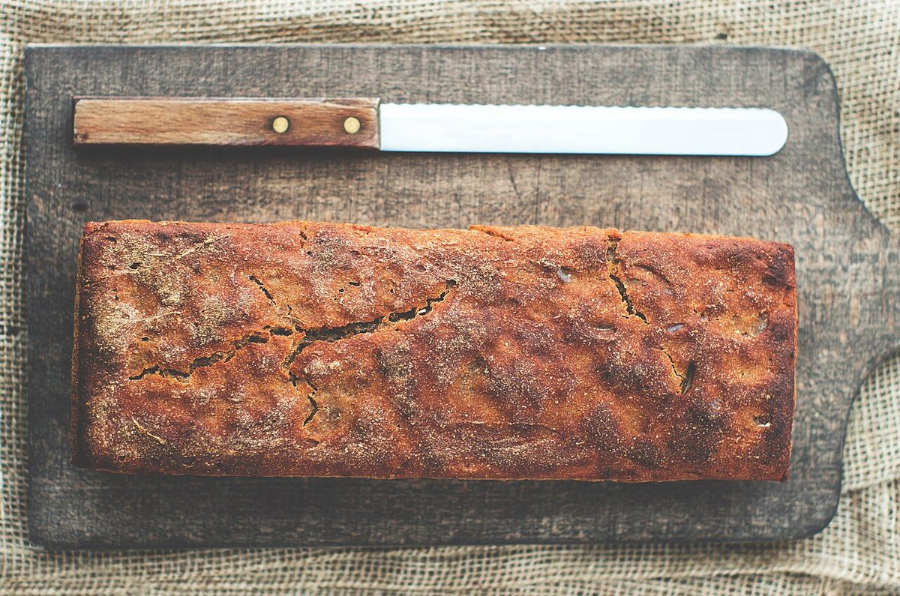
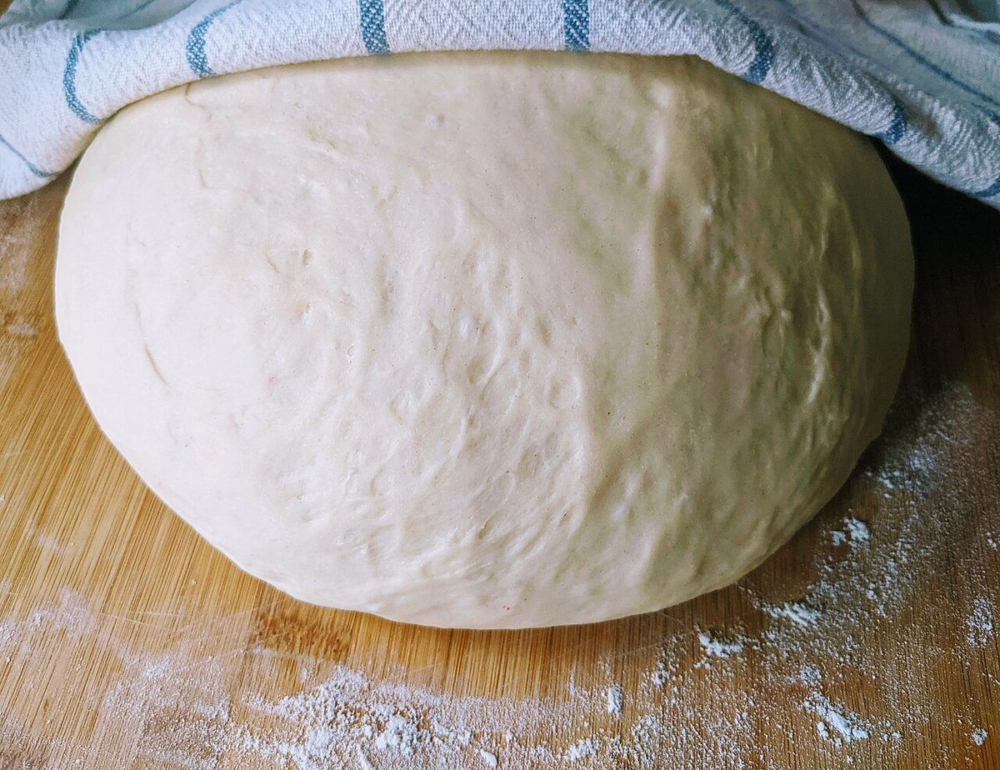
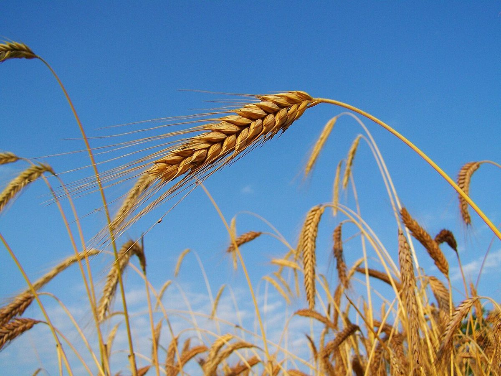
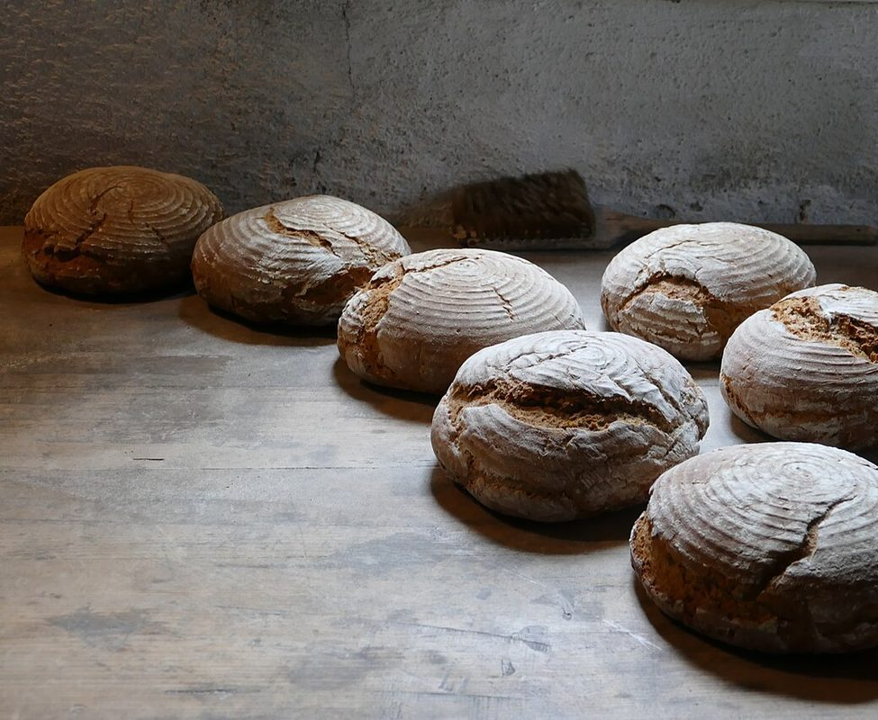
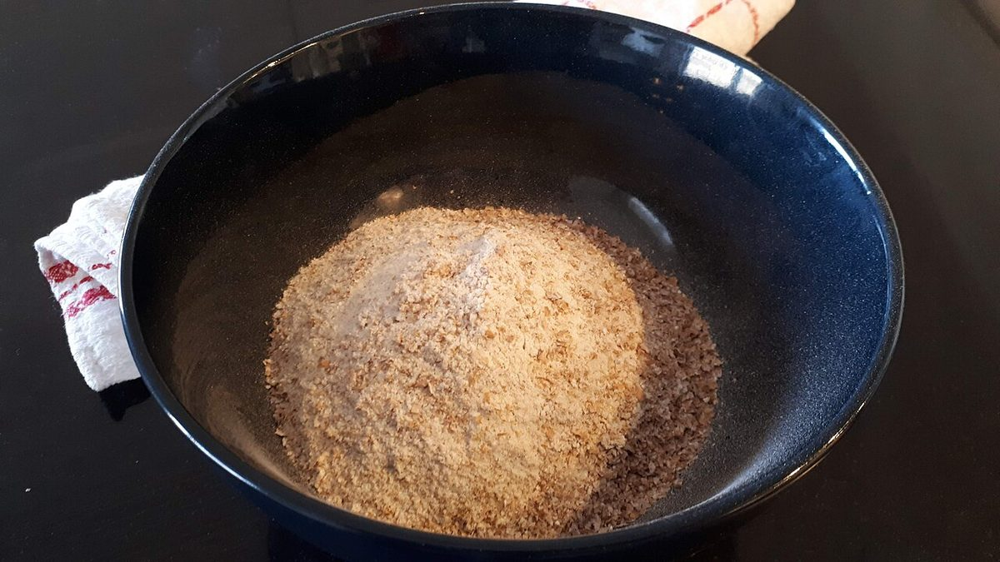

自家製天然酵母のパン MARU
ひと休みの前に、黒板をのぞく
※このキャッチコピーは制作側の仮案で、店舗の公式な言葉ではありません。
茨城県日立市相田町3丁目のパン屋「MARU」のご案内ページです。


お知らせ
- 営業時間
- 準備中(お問い合わせください)
- 定休日
- 準備中(お問い合わせください)
最新の情報は、お電話またはInstagramでご確認ください。
イメージ写真
フリー素材のイメージ写真です。店舗の実際の様子ではありません。





ページのご案内
お問い合わせは、お電話かInstagramで
営業時間・メニューなどの詳しい内容は、お電話またはInstagramでご確認ください。